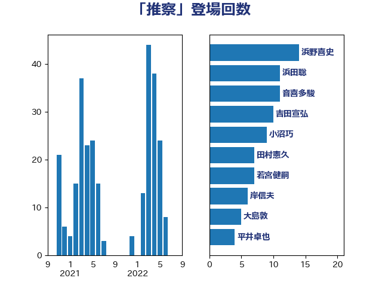

単語「推察」

| 浜野喜史 | 国民民主党 | 14 回 |
| 浜田聡 | NHK党 | 11 回 |
| 音喜多駿 | 日本維新の会 | 11 回 |
| 吉田宣弘 | 公明党 | 10 回 |
| 小沼巧 | 立憲民主党 | 9 回 |
| 田村憲久 | 自由民主党 | 7 回 |
| 若宮健嗣 | 自由民主党 | 7 回 |
| 岸信夫 | 自由民主党 | 6 回 |
| 大島敦 | 立憲民主党 | 5 回 |
| 平井卓也 | 自由民主党 | 4 回 |
| 田村まみ | 国民民主党 | 4 回 |
| 石垣のりこ | 立憲民主党 | 4 回 |
| 近藤和也 | 立憲民主党 | 4 回 |
| 長妻昭 | 立憲民主党 | 4 回 |
| 高木かおり | 日本維新の会 | 4 回 |
| 櫻井周 | 立憲民主党 | 3 回 |
| 羽田次郎 | 立憲民主党 | 3 回 |
| 青木愛 | 立憲民主党 | 3 回 |
| 須藤元気 | 無所属 | 3 回 |
| 三浦信祐 | 公明党 | 2 回 |
| 上川陽子 | 自由民主党 | 2 回 |
| 中谷一馬 | 立憲民主党 | 2 回 |
| 伊藤渉 | 公明党 | 2 回 |
| 住吉寛紀 | 日本維新の会 | 2 回 |
| 大串博志 | 立憲民主党 | 2 回 |
| 安達澄 | 無所属 | 2 回 |
| 山井和則 | 立憲民主党 | 2 回 |
| 川田龍平 | 立憲民主党 | 2 回 |
| 平林晃 | 公明党 | 2 回 |
| 徳永久志 | 立憲民主党 | 2 回 |
| 早稲田ゆき | 立憲民主党 | 2 回 |
| 本田太郎 | 自由民主党 | 2 回 |
| 梅谷守 | 立憲民主党 | 2 回 |
| 梶山弘志 | 自由民主党 | 2 回 |
| 江田憲司 | 立憲民主党 | 2 回 |
| 西村康稔 | 自由民主党 | 2 回 |
| 野田聖子 | 自由民主党 | 2 回 |
| 鈴木貴子 | 自由民主党 | 2 回 |
| こやり隆史 | 自由民主党 | 1 回 |
| 上田英俊 | 自由民主党 | 1 回 |
| 前原誠司 | 国民民主党 | 1 回 |
| 勝部賢志 | 立憲民主党 | 1 回 |
| 北村経夫 | 自由民主党 | 1 回 |
| 北神圭朗 | 無所属 | 1 回 |
| 古屋範子 | 公明党 | 1 回 |
| 古川禎久 | 自由民主党 | 1 回 |
| 吉田とも代 | 日本維新の会 | 1 回 |
| 土田慎 | 自由民主党 | 1 回 |
| 城井崇 | 立憲民主党 | 1 回 |
| 塩崎彰久 | 自由民主党 | 1 回 |
| 守島正 | 日本維新の会 | 1 回 |
| 室井邦彦 | 日本維新の会 | 1 回 |
| 宮内秀樹 | 自由民主党 | 1 回 |
| 小宮山泰子 | 立憲民主党 | 1 回 |
| 小寺裕雄 | 自由民主党 | 1 回 |
| 小林鷹之 | 自由民主党 | 1 回 |
| 小田原潔 | 自由民主党 | 1 回 |
| 小野田紀美 | 自由民主党 | 1 回 |
| 山下雄平 | 自由民主党 | 1 回 |
| 山田美樹 | 自由民主党 | 1 回 |
| 庄子賢一 | 公明党 | 1 回 |
| 後藤祐一 | 立憲民主党 | 1 回 |
| 打越さく良 | 立憲民主党 | 1 回 |
| 斎藤アレックス | 国民民主党 | 1 回 |
| 斎藤洋明 | 自由民主党 | 1 回 |
| 木村次郎 | 自由民主党 | 1 回 |
| 末次精一 | 立憲民主党 | 1 回 |
| 杉久武 | 公明党 | 1 回 |
| 杉本和巳 | 日本維新の会 | 1 回 |
| 柳ヶ瀬裕文 | 日本維新の会 | 1 回 |
| 柴田巧 | 日本維新の会 | 1 回 |
| 梅村みずほ | 日本維新の会 | 1 回 |
| 森まさこ | 自由民主党 | 1 回 |
| 池下卓 | 日本維新の会 | 1 回 |
| 浅川義治 | 日本維新の会 | 1 回 |
| 浅田均 | 日本維新の会 | 1 回 |
| 浅野哲 | 国民民主党 | 1 回 |
| 湯原俊二 | 立憲民主党 | 1 回 |
| 猪口邦子 | 自由民主党 | 1 回 |
| 白石洋一 | 立憲民主党 | 1 回 |
| 礒崎哲史 | 国民民主党 | 1 回 |
| 福山哲郎 | 立憲民主党 | 1 回 |
| 福島伸享 | 無所属 | 1 回 |
| 稲富修二 | 立憲民主党 | 1 回 |
| 稲津久 | 公明党 | 1 回 |
| 穀田恵二 | 日本共産党 | 1 回 |
| 笹川博義 | 自由民主党 | 1 回 |
| 緒方林太郎 | 無所属 | 1 回 |
| 美延映夫 | 日本維新の会 | 1 回 |
| 舞立昇治 | 自由民主党 | 1 回 |
| 芳賀道也 | 国民民主党 | 1 回 |
| 藤原崇 | 自由民主党 | 1 回 |
| 藤岡隆雄 | 立憲民主党 | 1 回 |
| 西村智奈美 | 立憲民主党 | 1 回 |
| 足立康史 | 日本維新の会 | 1 回 |
| 道下大樹 | 立憲民主党 | 1 回 |
| 金子俊平 | 自由民主党 | 1 回 |
| 金村龍那 | 日本維新の会 | 1 回 |
| 長友慎治 | 国民民主党 | 1 回 |
| 馬場伸幸 | 日本維新の会 | 1 回 |
| 鬼木誠 | 立憲民主党 | 1 回 |